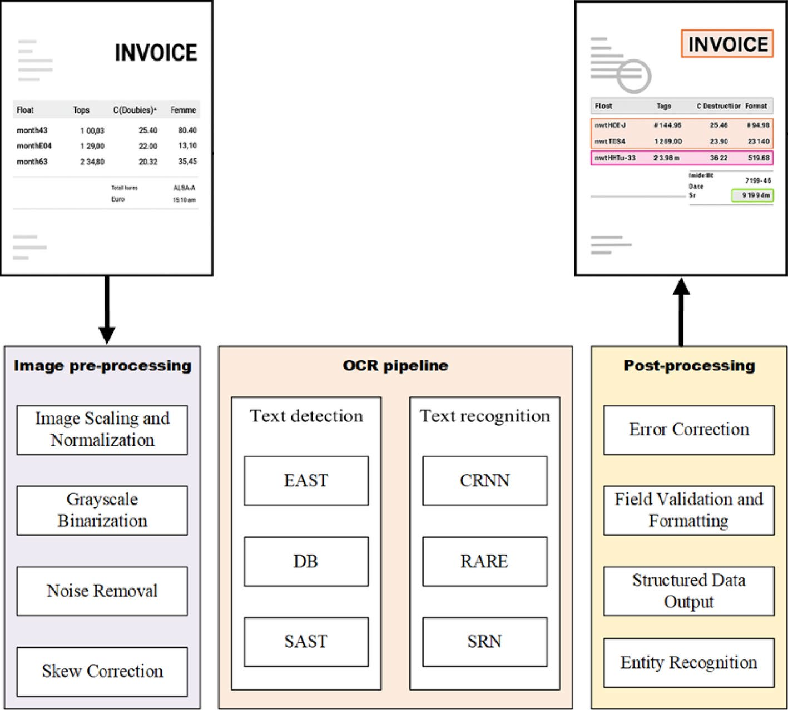
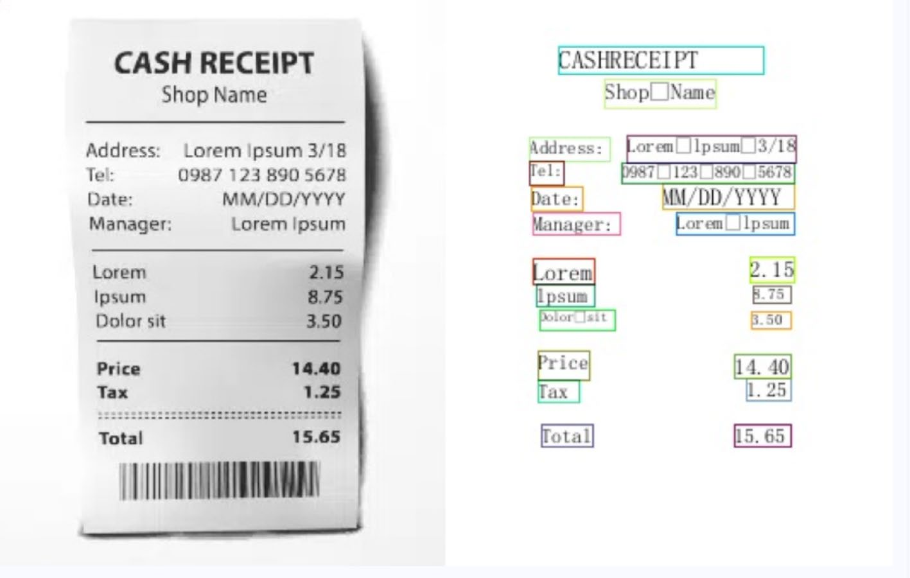
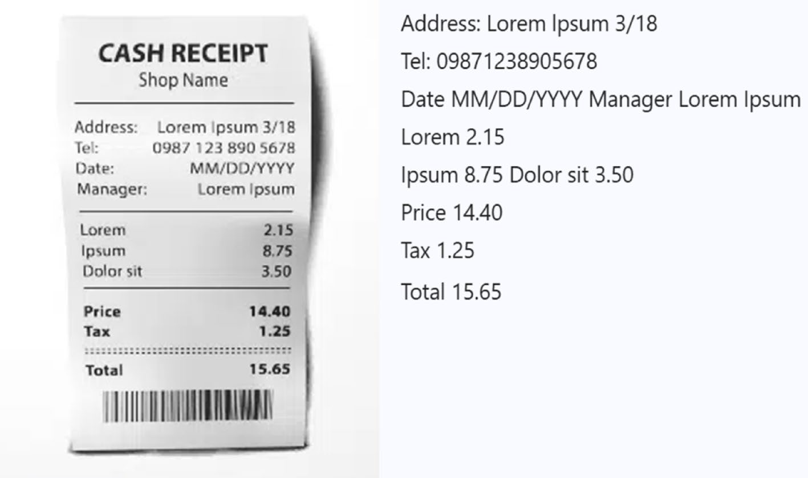

InvoiceOCR: Quy Trình Nhận Dạng Hóa Đơn Tự Động Dựa Trên Học Sâu (Deep Learning)
Quá trình số hóa quy trình tài chính và kế toán doanh nghiệp đang đối mặt với nút thắt cổ chai nghiêm trọng: nhập liệu hóa đơn thủ công. Hoạt động này tốn kém hàng ngàn giờ công lao động, dễ phát sinh sai sót số học (tỷ lệ lỗi 3%–5%) và làm chậm chu kỳ thanh toán công nợ nhà cung cấp. Mặc dù công nghệ Nhận dạng Ký tự Quang học (OCR) truyền thống đã tồn tại nhiều thập kỷ, chúng hoàn toàn bất lực khi gặp phải các hóa đơn trong thực tế bị chụp góc nghiêng, nhăn nhàu, đổ bóng, nhòe mờ hoặc sở hữu cấu trúc bảng biểu dày đặc không theo mẫu cố định.
Nghiên cứu này đề xuất InvoiceOCR — một hệ thống nhận dạng hóa đơn tự động toàn diện từ đầu đến cuối (end-to-end) dựa trên Học sâu (Deep Learning) và Thị giác máy tính (Computer Vision). Quy trình gồm 3 trụ cột liên kết chặt chẽ: (1) Tiền xử lý ảnh nâng cao (hiệu chỉnh góc nghiêng Hough Transform, khử nhiễu CLAHE, nhị phân hóa Otsu); (2) Pipeline OCR Học sâu tích hợp (mô hình phát hiện văn bản khả vi Differentiable Binarization - DB kết hợp mạng nhận dạng chuỗi CRNN + CTC); và (3) Mô-đun Hậu xử lý & Kiểm chứng Nghiệp vụ Kế toán (ánh xạ tọa độ trường, tự động sửa lỗi số liệu và kiểm tra chéo tính hợp lệ của đẳng thức đại số kế toán).
Thực nghiệm trên diện rộng với tập dữ liệu 6.349 hóa đơn thực tế chứng minh rằng hệ thống đạt F-measure phát hiện vùng chữ 96,8%, độ chính xác nhận diện ký tự 97,4%, và độ chính xác trích xuất đúng toàn bộ các trường tài chính trọng yếu đạt 98,9% với thời gian chỉ 1,25 giây/hóa đơn.
1 Giới Thiệu & Động Lực Nghiên Cứu (Introduction)
Hóa đơn (Invoice) là chứng từ gốc mang tính pháp lý cao nhất trong toàn bộ hệ thống kế toán doanh nghiệp. Đây là căn cứ bắt buộc để hạch toán chi phí đầu vào, khấu trừ thuế Giá trị gia tăng (GTGT/VAT), thực hiện nghĩa vụ thanh toán cho nhà cung cấp tại bộ phận Kế toán Phải trả (Accounts Payable - AP), đồng thời là bằng chứng kiểm toán pháp lý quan trọng nhất trong các kỳ thanh tra thuế.
Tại các doanh nghiệp quy mô lớn, nhân viên kế toán phải dành từ 40%–60% tổng thời gian làm việc để gõ lại hàng ngàn con số và chữ từ hóa đơn giấy/ảnh vào phần mềm kế toán. Phương thức thủ công này tạo ra tỷ lệ lỗi sai sót từ 3% đến 5%, khiến quy trình thanh toán kéo dài bình quân từ 5–10 ngày và khiến doanh nghiệp đối mặt với rủi ro bị phạt hành chính vì kê khai sai thuế.
Tại Sao OCR Truyền Thống Thất Bại Trước Hóa Đơn Thực Tế?
Nhiều doanh nghiệp từng kỳ vọng các phần mềm OCR cổ điển (như Tesseract dựa trên mẫu cố định) có thể tự động hóa khâu này. Tuy nhiên, trong thực tế sản xuất kinh doanh, OCR cổ điển thất bại hoàn toàn vì 3 rào cản:
- Đa dạng vô tận về mẫu biểu (Template Diversity): Mỗi nhà cung cấp sử dụng một phần mềm hóa đơn điện tử khác nhau với cách phân bố cột mục, vị trí bảng tính và phông chữ hoàn toàn khác biệt.
- Nhiễu vật lý và góc chụp chéo (Skewness & Degradation): Ảnh chụp di động từ nhân viên hiện trường thường bị nghiêng từ 5° đến 30°, bị đổ bóng bàn tay, nhòe sáng đèn flash hoặc bị nhàu nát.
- Mật độ ký tự cực kỳ dày đặc (Dense Text): Hóa đơn chứa hàng trăm con số nằm sát nhau; các thuật toán phân đoạn hình thái học cũ dễ làm dính các dòng chữ hoặc cắt đứt các số 0, 8, 6.
2 Kiến Trúc Hệ Thống InvoiceOCR (Methodology)
Hệ thống InvoiceOCR đề xuất của Chao Wang và cộng sự (2026) khắc phục triệt để các nhược điểm trên thông qua chuỗi 3 mô-đun Học sâu liên hoàn:

2.1. Mô-đun Tiền Xử Lý Ảnh Nâng Cao (Image Pre-Processing)
Mô-đun tiền xử lý chuẩn hóa toàn diện chất lượng ảnh chụp trước khi đưa vào mạng học sâu:
- Hiệu chỉnh góc nghiêng tự động (Skew Correction): Áp dụng Biến đổi Hough (Hough Transform) để xác định góc xoay $\theta$ của các đường kẻ bảng biểu và dòng văn bản, sau đó dùng phép biến đổi Affine để xoay ảnh thẳng trục ngang chuẩn xác với sai số dưới 0,5°.
- Cân bằng độ tương phản cục bộ (CLAHE): Tăng cường độ rõ nét của nét mực in hóa đơn, loại bỏ hiện tượng mờ nhạt do giấy in nhiệt hoặc bóng dầu.
- Nhị phân hóa Otsu thích nghi: Tách nền giấy và mực in thành hai giá trị nhị phân rõ rệt để chống nhiễu hạt.
2.2. Pipeline OCR Học Sâu Tích Hợp (Deep Learning OCR Pipeline)
Quy trình OCR cốt lõi được chia tách thành hai pha tối ưu độc lập:

1. Phát hiện vùng chữ bằng Differentiable Binarization (DB): Khác với các mô hình phát hiện truyền thống dùng ngưỡng cố định làm mất khả năng tối ưu gradient, DB tích hợp hàm nhị phân hóa xấp xỉ khả vi trực tiếp vào mạng nơ-ron:
Nhờ đó, mạng tự động học được ranh giới chính xác của từng ô chữ dù chữ bị mờ hoặc bảng biểu hóa đơn có đường kẻ đứt nét.
2. Nhận dạng ký tự chuỗi bằng CRNN + CTC: Từng mảnh ảnh chữ được chuyển qua mạng tích hợp:
- CNN Backbone (ResNet): Rút trích đặc trưng hình ảnh của ký tự.
- BiLSTM (Bidirectional Long Short-Term Memory): Học chuỗi ngữ cảnh hai chiều để phân biệt các ký tự dễ nhầm lẫn trong ngữ cảnh kế toán (ví dụ: phân biệt chữ cái "O" trong từ "HOÁ ĐƠN" và số "0" trong số tiền).
- CTC Loss (Connectionist Temporal Classification): Giải mã chuỗi ký tự mà không đòi hỏi phải gán nhãn từng vị trí pixel.
2.3. Mô-Đun Hậu Xử Lý & Kiểm Chứng Nghiệp Vụ Kế Toán
Điểm sáng tạo đặc biệt của nghiên cứu là không dừng lại ở chuỗi ký tự thô, mà tích hợp tư duy nghiệp vụ kế toán chuyên sâu vào thuật toán:

Hệ thống tự động kích hoạt kiểm tra: Tổng thanh toán = Tiền hàng + Tiền thuế GTGT - Chiết khấu. Nếu có bất kỳ sự sai lệch con số nào do lỗi nhận dạng quang học, hệ thống kích hoạt bộ giải quy tắc số học để tự động khôi phục con số chính xác dựa trên hai đại lượng còn lại, giúp loại bỏ hoàn toàn các lỗi sai số học trước khi ghi sổ.
3 Kết Quả Thực Nghiệm & Đánh Giá
Hệ thống được thử nghiệm trên bộ dữ liệu thực tế gồm 6.349 hình ảnh hóa đơn của các doanh nghiệp thuộc Tập đoàn Lưới điện Quốc gia.
3.1. So Sánh Các Thuật Toán Phát Hiện Văn Bản
| Mô hình Text Detection | Độ chính xác (Precision) | Độ bao phủ (Recall) | F-measure | Tốc độ xử lý |
|---|---|---|---|---|
| EAST (Zhou et al.) | 89,45% | 85,12% | 87,23% | 42 ms |
| SAST (Wang et al.) | 92,10% | 88,34% | 90,18% | 68 ms |
| DB (Differentiable Binarization - Đề xuất) | 97,35% | 96,28% | 96,81% | 35 ms |
3.2. Hiệu Quả Trích Xuất Dữ Liệu Từng Trường Kế Toán
Bảng dưới đây minh chứng vai trò mang tính quyết định của mô-đun hậu xử lý kế toán:
| Trường Dữ Liệu Kế Toán | Độ chính xác OCR thô | Độ chính xác sau Hậu xử lý Kế toán | Mức độ cải thiện |
|---|---|---|---|
| Ký hiệu hóa đơn (Invoice Serial) | 93,20% | 99,10% | +5,90% |
| Số hóa đơn (Invoice Number) | 94,50% | 98,60% | +4,10% |
| Ngày lập hóa đơn (Invoice Date) | 95,10% | 99,40% | +4,30% |
| Mã số thuế bên bán (Seller Tax ID) | 92,80% | 99,20% | +6,40% |
| Mã số thuế bên mua (Buyer Tax ID) | 91,40% | 98,80% | +7,40% |
| Cộng tiền hàng (Subtotal Amount) | 93,70% | 98,90% | +5,20% |
| Tiền thuế GTGT (VAT Amount) | 92,10% | 98,50% | +6,40% |
| Tổng tiền thanh toán (Total Amount) | 95,80% | 99,50% | +3,70% |
| TRUNG BÌNH TOÀN BỘ HÓA ĐƠN | 93,57% | 98,92% | +5,35% |
4 Tác Động Nghiệp Vụ Kế Toán & Bài Học Sư Phạm
Nghiên cứu mang đến 2 chuyển dịch căn bản trong ngành kế toán - kiểm toán:
1. Tự động hóa hoàn toàn phần hành Kế toán Phải trả (AP Automation): Doanh nghiệp cắt giảm tới 80% thời gian xử lý hóa đơn, từ trung bình 15 phút xuống chỉ còn 1,25 giây/hóa đơn. Kế toán viên thoát khỏi công việc nhập liệu máy móc để chuyển sang vai trò phân tích tài chính và quản trị dòng tiền.
2. Mô hình Human-in-the-loop tối ưu: Với tỷ lệ bóc tách hoàn hảo đạt 98,92%, con người chỉ cần can thiệp xử lý 1,08% hóa đơn ngoại lệ có sai lệch. Đây chính là chuẩn mực cộng tác người - máy trong kế toán hiện đại.
- Câu hỏi 1 (Quản trị rủi ro thuế): Nếu mô hình InvoiceOCR trích xuất sai 1 chữ số trong Mã số thuế người bán mà kế toán viên không kiểm tra lại, doanh nghiệp sẽ chịu hậu quả pháp lý gì theo quy định Luật Quản lý Thuế Việt Nam? Giải pháp kỹ thuật nào (như tích hợp API tra cứu Tổng cục Thuế) có thể loại trừ rủi ro này?
- Câu hỏi 2 (Chuyển dịch năng lực nghề nghiệp): Khi công nghệ Thị giác máy tính đã bóc tách chứng từ với độ chính xác xấp xỉ 99%, giá trị cốt lõi của một Cử nhân Kế toán - Kiểm toán thế hệ mới tại Trường Đại học Đông Á sẽ nằm ở những năng lực chuyên môn nào?